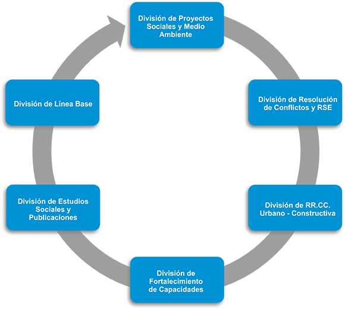

lineas de trabajo


division de proyectos sociales y medio ambiente
Se especializa en la formulación y evaluación de proyectos de inversión, públicos y privados, dirigidos a la promoción del desarrollo económico local y empresarial.- Formulación de Proyectos
- Elaboración de proyectos de Inversión Pública a nivel de Perfil, Pre factibilidad y Factibilidad en el marco del SNIP.
- Viabilidad de proyectos con recursos propios o por endeudamiento.
- Costos y presupuestos.
- Gestión de proyectos.
- Promoción de alianzas público-privadas.
- Herramientas de Sistemas de información geográfica para la toma de decisiones.
- Evaluación de Proyectos
- Evaluación Ex ante y Ex post de Proyectos de Inversión Pública.
- Evaluación de procesos.
- Evaluación de resultados.
- Evaluación de impacto.
division de rse y resolucion de conflictos
En el marco de responsabilidad social corporativa, esta división se especializa en la resolución de conflictos sociales y ambientales; bajo los enfoques intercultural, de género, de derechos humanos y de concertación. Su actividad incluye:- Diagnóstico situacional y mapeo de actores sociales.
- Gestión estratégica de procesos de diálogo intercultural, concertación y acuerdos progresivos.
- Negociación y resolución del conflicto.
- Sinergias y alianzas para la intervención: enfoque de red para potenciar el impacto.
- Gestión de la RSE.
- Monitoreo de compromisos ambientales y sociales.
DIVISIÓN DE relaciones comunitarias urbano - constructivas
- Análisis del ámbito de influencia y mapeo de actores sociales.
- Asesoría legal.
- Construcción y atención de sistema de alerta temprana.
- Monitoreo del clima social.
- Gestión de casos.
- Resolución de controversias.
- Obtención de Conformidad de Obra.
DIVISIÓN DE linea base
Especializada en el diseño, ejecución y procesamiento de Línea Base para la ejecución de proyectos públicos y empresariales, mediante la metodología cualitativa y cuantitativa y el recurso de fuentes primarias y secundarias.
Desarrolla:
- Indicadores Demográficos.
- Indicadores Sociales.
- Indicadores Culturales.
- Indicadores de Representatividad.
- Indicadores Económicos.
- Indicadores de Percepción local.
DIVISIÓN DE fortalecimiento de capacidades
División especializada en la capacitación académica, en la modalidad virtual y presencial, con el objetivo de promover el fortalecimiento de capacidades de todos los públicos, especialmente los más vulnerables:- Grupos de estudios y debate.
- Organización de seminarios temáticos.
- Conferencias, charlas y cursos de formación.
- Pasantías asociadas a sectores específicos.
- Organización de congresos y simposios.
- Cursos virtuales especializados.
DIVISIÓN DE estudios sociales y publicaciones
Estrategia S.A. tiene un permanente compromiso con la sociedad, contribuyendo a su investigación y desarrollo, a través de publicaciones de estudios sociales realizados por nuestro equipo; así como propuestas independientes. Ámbitos:- Análisis de la realidad nacional e internacional mediante metodologías aplicadas, cualitativas y cuantitativas.
- Diseño y elaboración de investigaciones en las temáticas:
- Población.
- Condiciones de vida.
- Desarrollo social y económico.
- Cultura.
- Recursos naturales, industrias extractivas y conflictos sociales.
- Derechos humanos.
- Medio Ambiente y el uso de tecnologías amigables.
- Publicación de investigaciones propias y de investigaciones independientes.